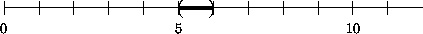
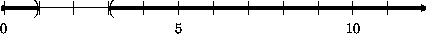

Boolean
Operations
For many problems, computer programs must deal with different situations in different ways. A game program may have to determine whether an object's speed is in some range or whether it is located in some specific area of the screen. For an engine control program, a condition may describe whether or when a valve is to be opened. To deal with conditions, we need to have a way of saying a condition is true or false; we need a new class of values, which, by convention, are called BOOLEAN (or truth) values. This section introduces booleans, expressions that evaluate to Booleans, and expressions that compute values depending on the boolean result of some evaluation.
Boolean Operations |
Consider the following problem statement:
Company XYZ & Co. pays all its employees $12 per hour. A typical employee works between 20 and 65 hours per week. Develop a program that determines the wage of an employee from the number of hours of work, if the number is within the proper range.The italic words highlight the new part (compared to section 2.3). They imply that the program must deal with its input in one way if it is in the legitimate range, and in a different way if it is not. In short, just as people need to reason about conditions, programs must compute in a conditional manner.
Conditions are nothing new. In mathematics we talk of true and false claims, which are conditions. For example, a number may be equal to, less than, or greater than some other number. If x and y are numbers, we state these three claims about x and y with
x = y: ``x is equal to y'';
x < y: ``x is strictly less than y'';
x > y: ``x is strictly greater than y''.
For any specific pair of (real) numbers, exactly one of these claims holds. If x = 4 and y = 5, the second claim is a true statement, and the others are false. If x = 5 and y = 4, however, the third claim is true, and the others are false. In general, a claim is true for some values of the variables and false for others.
In addition to determining whether an atomic claim holds in a given situation, it is sometimes important to determine whether combinations of claims hold. Consider the three claims above, which we can combine in several ways:
x = y and x < y and x > y
x = y or x < y or x > y
x = y or x < y .
The first compound claim is false because no matter what numbers we pick for x and y, two of the three claims are false. The second compound claim, however, always holds no matter what numbers we pick for x and y. Finally, the third kind of compound claim is the most important of all, because it is true in some cases and false in others. For example, it holds when x = 4, y = 4 and x = 4, y = 5, but it is false if x = 5 and y = 3.
Like mathematics, Scheme has ``words'' for expressing truth and falsity,
for stating atomic claims, for combining claims into compound claims,
and for expressing that a claim is true or false. The ``word'' for true is
true and the ``word'' for false is false. If a claim concerns
the relationship between two numbers, it can typically be expressed with a
RELATIONAL OPERATION,
for example, =, <, and
>.
Translating the three mathematical claims from above follows our well-known pattern of writing a left parenthesis, followed by the operator, its arguments, and a right parenthesis:
(= x y): ``x is equal to y'';
(< x y): ``x is strictly less than y''; and
(> x y): ``x is strictly greater than y''.
We will also encounter <= and >= as relational operators.
A Scheme expression that compares numbers has a result just like any other
Scheme expression. The result, however, is true or false, not
a number. That is, when an atomic Scheme claim about two numbers is
true, it evaluates to true. For example,
(< 4 5) = true
Similarly, a false claim evaluates to false:
(= 4 5) = false
Expressing compound conditions in Scheme is equally natural. Suppose we want to
combine (= x y) and (< y z) so that the compound claim
holds if both conditions are true. In Scheme we would write
(and (= x y) (< y z))
to express this relationship. Similarly, if we want to formulate a compound claim that is true if (at least) one of two claim holds, we write
(or (= x y) (< y z))
Finally, when we write something such as
(not (= x y))
we state that we wish the negation of a claim to be true.13
Compound conditions, like atomic conditions, evaluate to true or
false. Consider the following compound condition:
(and (= 5 5) (< 5 6))
It consists of two atomic claims: (= 5 5) and (< 5 6).
Both evaluate to true, and therefore the evaluation
of the and-expression
continues as follows:
... = (and true true) = true
The last step follows because, if both parts of an and-expression are
true, the entire expression evaluates to true.
In contrast, if one of the two claims in an and-expression evaluates to
false, the and-expression evaluates to false:
(and (= 5 5) (< 5 5)) = (and true false) = false
The evaluation rules for or and not are similarly
intuitive.
The next few sections will explain why programming requires formulating conditions and reasoning about them.
Exercise 4.1.1. What are the results of the following Scheme conditions?
(and (> 4 3) (<= 10 100))
(or (> 4 3) (= 10 100))
(not (= 2 3))  Solution
Solution
Exercise 4.1.2. What are the results of
(> x 3)
(and (> 4 x) (> x 3))
(= (* x x) x)
for (a) x = 4, (b) x = 2, and (c) x = 7/2 ?  Solution
Solution
Testing |
Here is a simple function that tests some condition about a number:
;;is-5? : number -> boolean;; to determine whethernis equal to5(define (is-5? n) (= n 5))
The function produces true if, and only if, its input is equal to
5. Its contract contains one novel element: the word
boolean. Just like number, boolean represents a
class of values that is built into Scheme. Unlike number,
boolean consists of just two values: true and false.
Here is a slightly more interesting function with a boolean output:
;;is-between-5-6? : number -> boolean;; to determine whethernis between 5 and 6 (exclusive) (define (is-between-5-6? n) (and (< 5 n) (< n 6)))
It consumes a number and produces true if the number is between, but
does not include, 5 and 6. One good way to understand the
function is to say that it describes the following interval on the number
line:

Interval Boundaries: An interval boundary marked with ``('' or ``)'' is excluded from the interval; an interval boundary marked with ``['' or ``]'' is included.
The following third function from numbers to boolean values represents the most complicated form of interval:
;;is-between-5-6-or-over-10? : number -> boolean;; to determine whethernis between 5 and 6 (exclusive) ;; or larger than or equal to10(define (is-between-5-6-or-over-10? n) (or (is-between-5-6? n) (>= n 10)))
The function returns true for two portions of the number line:
![[curriculum1aa-Z-G-2.gif]](curriculum1aa-Z-G-2.gif)
The left part of the interval is the portion between, but not
including, 5 and 6; the right one is the infinite line
starting at, and including, 10. Any point on those two portions of
the line satisfies the condition expressed in the function
is-between-5-6-or-over-10?.
All three functions test numeric conditions. To design or to comprehend such functions, we must understand intervals and combinations (also known as unions) of intervals. The following exercises practice this important skill.
Exercise 4.2.1.
Translate the following five intervals on the real line into Scheme
functions that accept a number and return true if the number is in
the interval and false if it is outside:
the interval (3,7]:
![[curriculum1aa-Z-G-3.gif]](curriculum1aa-Z-G-3.gif)
the interval [3,7]:
![[curriculum1aa-Z-G-4.gif]](curriculum1aa-Z-G-4.gif)
the interval [3,9):
![[curriculum1aa-Z-G-5.gif]](curriculum1aa-Z-G-5.gif)
the union of (1,3) and (9,11):
![[curriculum1aa-Z-G-6.gif]](curriculum1aa-Z-G-6.gif)
and the range of numbers outside of [1,3].

Exercise 4.2.2. Translate the following three Scheme functions into intervals on the line of reals:
1. (define (in-interval-1? x) (and (< -3 x) (< x 0))) 2. (define (in-interval-2? x) (or (< x 1) (> x 2))) 3. (define (in-interval-3? x) (not (and (<= 1 x) (<= x 5))))
Also formulate contracts and purpose statements for the three functions.
Evaluate the following expressions by hand:
(in-interval-1? -2)
(in-interval-2? -2)
(in-interval-3? -2)
Show the important steps. Use the pictures to check your
results.  Solution
Solution
Exercise 4.2.3. Mathematical equations in one variable are claims about an unknown number. For example, the quadratic equation
is a claim concerning some unknown number x. For x = - 1, the claim holds:
For x = 1, it doesn't, because
![[curriculum1aa-Z-G-10.gif]](curriculum1aa-Z-G-10.gif)
and 4 is not equal to 0. A number for which the claim holds is called a solution to the equation.
We can use Scheme to formulate equational conditions as a function. If someone then claims to have a solution, we can use the function to test whether the proposed solution is, in fact, a solution. Our running example corresponds to the function
;;equation1 : number -> boolean;; to determine whetherxis a solution for x2 + 2 · x + 1 = 0 (define (equation1 x) (= (+ (* x x) (+ (* 2 x) 1)) 0))
When we apply equation1 to some number, we get true or
false:
(equation1 -1) = true
and
(equation1 +1) = false
Translate the following equations into Scheme functions:
4 · n + 2 = 62
2 · n2 = 102
4 · n2 + 6 · n + 2 = 462
Determine whether 10, 12, or 14 are solutions of
these equations.  Solution
Solution
Exercise 4.2.4. Equations are not only ubiquitous in mathematics, they are also heavily used in programming. We have used equations to state what a function should do with examples, we have used them to evaluate expressions by hand, and we have added them as test cases to the Definitions
Testing |
window. For example,
if our goal is to define Fahrenheit->Celsius, we might have
added our examples as test cases as follows:
;; test expression: (Fahrenheit->Celsius 32) ;; expected result: 0
and
;; test expression: (Fahrenheit->Celsius 212) ;; expected result: 100
After clicking the Execute button we can compare the two numbers. If they are equal, we know our function works.
As our results become more and more complex, comparing values becomes more
and more tedious. Using =, we can instead translate these
equations into claims:
(= (Fahrenheit->Celsius 32) 0)
and
(= (Fahrenheit->Celsius 212) 100)
Now, if all claims evaluate to true, we know that our function
works for the specified examples. If we see a false anywhere,
something is still wrong.
Reformulate the test cases for exercises 2.2.1, 2.2.2, 2.2.3, and 2.2.4 as claims.
Testing: Writing tests as claims is good practice, though we need
to know more about equality to develop good automatic tests. To do so, we
resume the discussion of equality and testing in
section 17.8.  Solution
Solution
Conditionals |
Some banks pay different levels of interest for saving accounts. The more a customer deposits, the more the bank pays. In such arrangements, the interest rate depends on the interval into which the savings amount falls. To assist their bank clerks, banks use interest-rate functions. An interest function consumes the amount that a customer wishes to deposit and responds with the interest that the customer receives for this amount of money.
Our interest rate function must determine which of several conditions holds for the input. We say that the function is a CONDITIONAL FUNCTION, and we formulate the definition of such functions using CONDITIONAL EXPRESSIONS. The general shape of a conditional expression is
(cond [question answer] ... [question answer]) | or | (cond [question answer] ... [else answer]) |
cond-lines. Each cond-line, also called a
cond-clause, contains two expressions, called CONDITION
and ANSWER. A condition is a conditional expression that
involves the parameters; the answer is a Scheme expression that computes
the result from the parameters and other data if the conditional expression
holds.14Conditional expressions are the most complicated form of expressions we have encountered and will encounter. It is therefore easy to make mistakes when we write them down. Compare the following two parenthesized expressions:
(cond [(< n 10) 5.0] [(< n 20) 5] [(< n 30) true]) | (cond [(< n 10) 30 12] [(> n 25) false] [(> n 20) 0]) |
cond-line contains two expressions. In contrast, the right one is
not a valid cond-expression. Its first line contains three
expressions instead of two.
When Scheme evaluates a cond-expression, it determines the value
of each condition, one by one. A condition must evaluate to true or
false. For the first condition that evaluates to true, Scheme
evaluates the corresponding answer, and the value of the answer is the
value of the entire cond-expression. If the last condition is
else and all other conditions fail, the answer for the
cond is the value of the last answer expression.15
Here are two simple examples:
(cond [(<= n 1000) .040] [(<= n 5000) .045] [(<= n 10000) .055] [(> n 10000) .060]) | (cond [(<= n 1000) .040] [(<= n 5000) .045] [(<= n 10000) .055] [else .060]) |
n with 20000, the first three conditions
evaluate to false in both expressions. For the expression on the left
the fourth condition, (> 20000 10000), evaluates to true
and therefore the answer is 0.60. For the expression on the right,
the else clause specifies what the result of the entire expression
is. In contrast, if n is 10000, the value is
.055 because for both expressions, (<= 10000 1000) and
(<= 10000 5000) evaluate to false and (<= 10000 10000) evaluates to true.
Exercise 4.3.1. Decide which of the following two cond-expressions is legal:
(cond [(< n 10) 20] [(> n 20) 0] [else 1]) | (cond [(< n 10) 20] [(and (> n 20) (<= n 30))] [else 1]) |
(cond [(< n 10) 20] [* 10 n] [else 555]) ;Solution
Exercise 4.3.2. What is the value of
(cond [(<= n 1000) .040] [(<= n 5000) .045] [(<= n 10000) .055] [(> n 10000) .060])
when n is (a) 500, (b) 2800, and (c)
15000?  Solution
Solution
Exercise 4.3.3. What is the value of
(cond [(<= n 1000) (* .040 1000)] [(<= n 5000) (+ (* 1000 .040) (* (- n 1000) .045))] [else (+ (* 1000 .040) (* 4000 .045) (* (- n 10000) .055))])
when n is (a) 500, (b) 2800, and (c)
15000?  Solution
Solution
With the help of cond-expressions, we can now define the interest rate function that we mentioned at the beginning of this section. Suppose the bank pays 4% for deposits of up to $1,000 (inclusive), 4.5% for deposits of up to $5,000 (inclusive), and 5% for deposits of more than $5,000. Clearly, the function consumes one number and produces one:
;;interest-rate : number -> number;; to determine the interest rate for the givenamount(define (interest-rate amount) ...)
Furthermore, the problem statement provides three examples:
(= (interest-rate 1000) .040)
(= (interest-rate 5000) .045)
(= (interest-rate 8000) .050)
Recall that examples are now formulated as boolean expressions when possible.
The body of the function must be a cond-expression that distinguishes the three cases mentioned in the problem statement. Here is a sketch:
(cond [(<= amount 1000) ...] [(<= amount 5000) ...] [(> amount 5000) ...])
Using the examples and the outline of the cond-expression, the answers are easy:
(define (interest-rate amount) (cond [(<= amount 1000) 0.040] [(<= amount 5000) 0.045] [(> amount 5000) 0.050]))
Since we know that the function requires only three cases, we can also replace
the last condition with else:
(define (interest-rate amount) (cond [(<= amount 1000) 0.040] [(<= amount 5000) 0.045] [else 0.050]))
When we apply interest-rate to an amount, say, 4000, the
calculation proceeds as usual. Scheme first copies the body of the
function and replaces amount by 4000:
(interest-rate 4000) = (cond [(<= 4000 1000) 0.040] [(<= 4000 5000) 0.045] [else 0.050]) = 0.045
The first condition is false but the second one is true, so
the result is 0.045 or 4.5%. The evaluation would proceed in the
same manner if we had used the variant of the function with (> amount
5000) instead of else.
Developing conditional functions is more difficult than designing a plain function. The key is to recognize that the problem statement lists cases and to identify the different cases. To emphasize the importance of this idea, we introduce and discuss a design recipe for designing conditional functions. The new recipe introduces a new step, DATA ANALYSIS, which requires a programmer to understand the different situations that the problem statement discusses. It also modifies the Examples and the Body steps of the design recipe in section 2.5:
For numeric functions, a good strategy is to draw a number line and to
identify the intervals that correspond to a specific situation. Consider
the contract for the interest-rate function:
;;interest-rate : number -> number;; to determine the interest rate for the givenamount >= 0(define (interest-rate amount) ...)
It inputs non-negative numbers and produces answers for three distinct situations:
![[curriculum1aa-Z-G-11.gif]](curriculum1aa-Z-G-11.gif)
For functions that process booleans, the cond-expression must
distinguish between exactly two situations: true and false.
We will soon encounter other forms of data that require case-based
reasoning.
For our interest-rate function, we should use 0,
1000, and 5000 as borderline cases. In addition, we
should pick numbers like 500, 2000, and 7000 to
test the interiors of the three intervals.
(define (interest-rate amount) (cond [... ...] [... ...] [... ...]))
Next we must formulate the conditions that characterize each situation. The conditions are claims about the function's parameters, expressed with Scheme's relational operators or with our own functions.
The number line from our example translates into the following three conditions:
(and (<= 0 amount) (<= amount 1000))
(and (< 1000 amount) (<= amount 5000))
(< 5000 amount)
Adding these conditions to the function produces a better approximation of the final definition:
(define (interest-rate amount) (cond [(and (<= 0 amount) (<= amount 1000)) ...] [(and (< 1000 amount) (<= amount 5000)) ...] [(> amount 5000) ...]))
At this stage, a programmer should check that the chosen conditions
distinguish inputs in an appropriate manner. Specifically, if some input
belongs to a particular situation and cond-line, the preceding
conditions should evaluate to false and the condition of the line
should evaluate to true.
cond-clause. More concretely, we
consider each line in the cond-expression separately, assuming
that the condition holds.
In our example, the results are directly specified by the problem
statement. They are 4.0, 4.5, and 5.0. In more
complicated examples, we may have to determine an expression for each
cond-answer following the suggestion of our first design recipe.
Hint: If the answers for each cond-clause are complex, it is good
practice to develop one answer at a time. Assume that the condition
evaluates to true, and develop an answer using the parameters,
primitives, and other functions. Then apply the function to inputs that force
the evaluation of this new answer. It is legitimate to leave ``...'' in
place of the remaining answers.
When the definition is complete and tested, a programmer might wish to
check whether the conditions can be simplified. In our example, we know
that amount is always greater than or equal to 0, so the
first condition could be formulated as
(<= amount 1000)
Furthermore, we know that cond-expressions are evaluated
sequentially. That is, by the time the second condition is evaluated the
first one must have produced false. Hence we know that the amount is
not less than or equal to 1000, which makes the left
component of the second condition superfluous. The appropriately simplified
sketch of interest-rate is as follows:
(define (interest-rate amount) (cond [(<= amount 1000) ...] [(<= amount 5000) ...] [(> amount 5000) ...]))
Figure 6 summarizes these suggestions on the design of conditional functions. Read it in conjunction with figure 4 and compare the two rows for ``Body.'' Reread the table when designing a conditional function!
Exercise 4.4.1.
Develop the function interest. Like interest-rate, it
consumes a deposit amount. Instead of the rate, it produces the actual
amount of interest that the money earns in a year. The bank pays a flat 4%
for deposits of up to $1,000, a flat 4.5% per year for deposits of up to
$5,000, and a flat 5% for deposits of more than
$5,000.  Solution
Solution
Exercise 4.4.2.
Develop the function tax, which consumes the gross pay and produces
the amount of tax owed. For a gross pay of $240 or less, the tax is 0%; for
over $240 and $480 or less, the tax rate is 15%; and for any pay over
$480, the tax rate is 28%.
Also develop netpay. The function determines the net pay of an
employee from the number of hours worked. The net pay
is the gross
pay minus the tax. Assume the hourly pay rate is $12.
Hint: Remember to develop auxiliary functions when a definition becomes too
large or too complex to manage.  Solution
Solution
Exercise 4.4.3. Some credit card companies pay back a small portion of the charges a customer makes over a year. One company returns
.25% for the first $500 of charges,
.50% for the next $1000 (that is, the portion between $500 and $1500),
.75% for the next $1000 (that is, the portion between $1500 and $2500),
and 1.0% for everything above $2500.
Thus, a customer who charges $400 a year receives $1.00, which is 0.25 · 1/100 · 400, and one who charges $1,400 a year receives $5.75, which is 1.25 = 0.25 · 1/100 · 500 for the first $500 and 0.50 · 1/100 · 900 = 4.50 for the next $900.
Determine by hand the pay-backs for a customer who charged $2000 and one who charged $2600.
Define the function pay-back, which consumes a charge amount
and computes the corresponding pay-back amount.  Solution
Solution
Exercise 4.4.4. An equation is a claim about numbers; a quadratic equation is a special kind of equation. All quadratic equations (in one variable) have the following general shape:
![[curriculum1aa-Z-G-12.gif]](curriculum1aa-Z-G-12.gif)
In a specific equation, a, b and c are replaced by numbers, as in
or
The variable x represents the unknown.
Depending on the value of x, the two sides of the equation
evaluate to the same value (see exercise 4.2.3). If the two sides
are equal, the claim is true; otherwise it is false. A number that makes
the claim true is a solution.
The first equation has one solution,
- 1, as we can easily check:
The second equation has two solutions: + 1 and - 1.
The number of solutions for a quadratic equation depends on the values of a, b, and c. If the coefficient a is 0, we say the equation is degenerate and do not consider how many solutions it has. Assuming a is not 0, the equation has
two solutions if b2 > 4 · a · c,
one solution if b2 = 4 · a · c, and
no solution if b2 < 4 · a · c.
To distinguish this case from the degenerate one, we sometimes use the phrase proper quadratic equation.
Develop the function how-many, which consumes the coefficients
a, b, and c of a proper quadratic equation and
determines how many solutions the equation has:
(how-many 1 0 -1) = 2 (how-many 2 4 2) = 1
Make up additional examples. First determine the number of solutions by hand, then with DrScheme.
How would the function change if we didn't assume the equation was
proper?  Solution
Solution
13 In truth, the
operations and and or are different from not,
which is why they are typeset in different fonts. We ignore this minor
difference for now.
14 The use of brackets, that is, [ and ], in
place of parentheses is optional, but it sets apart the conditional clauses
from other expressions and helps people read functions.
15 If the
cond-expression has no else clause and all conditions
evaluate to false, an error is signaled in Beginning Student Scheme.
![[curriculum-Z-G-D-4.gif]](curriculum-Z-G-D-4.gif) enumerate all possible situations
enumerate all possible situations